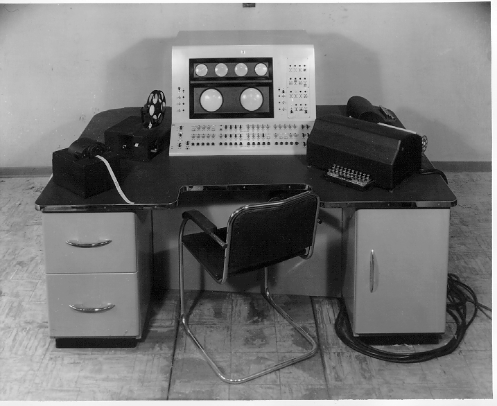

Renaissance Board Games, The Mechanical Turk, and the Soviet Chess Battleground
Sebastian Matthews — May 7th, 2024
Hnefatafl and Rithmomachia
The Mechanical Turk
El Ajedrecista, the "Chess Player"
Kaissa and Deep Blue
Hnefatafl and Rithmomachia
What is Rithmomachia? What is Hnefatafl?
Rithmomachia is a game that is highly similar to chess; two players of the intellectual elite would take turns to move pieces around an 8x16 board and try to claim victory in around five different ways for the sake of learning Boethian mathematics.
See more here for game rules.
Hnefatafl was another board game that was popular during the Renaissance, with the goal of the attackers(in black) being the capture of the defenders' king(the red square).
For the defenders to win, the king must escape to a corner of the board.
After the introduction of chess, both of these games "died out" or saw huge declines in popularity.
What were some popular(or unpopular) games in the Renaissance?
Biribi, otherwise known as Birissi or Cavagnole, was a gambling game that found itself to be akin to roulette or craps; players place pieces on a numbered tile and make bets, where a ticket is then drawn by a dealer. Whoever's selected tile with the matching ticket outcome would take home the spoils.
Frussi, now known as Primiera, is a four-of-a-kind card matching game; players each draw four cards and can either bid, stake, or pass. Whenever one stakes, they only cover the last bid. Whoever matches four cards or has the highest card values wins.
Chess, the most documented game in the modern world! Thousands of chess compendiums would be written at this time.
Acting games like Le Jeu d'Aventure("The Game of Adventure"), Ragman's Roll, Commedia dell'arte, or Hearts were popular with the masses; players would take poems written out on scrolls with ribbons or tarot cards and assume the role of the figure described or imagined.
What other forms of entertainment were popular during the Renaissance?
Theatre and poetry were the main types of public entertainment; automata presence in theatrical performances were also noted, as clockmakers would construct machines for plays and were often used for special effects, such as...
The Mechanical Turk
What was the Mechanical Turk?
The Mechanical Turk was a fake chess engine made by Hungarian inventor Wolfgang von Kempelen, revealed in 1770 as the world's first "autonomous" chess robot that could complete the knight's tour, a similar problem to the bridges of Konigsburg.
The machine was destroyed in an 1854 fire, with Kempelen's secret being discovered years later.
This machine is not to be confused for the Amazon service, which offers offshore labor for online products that are supposed to be "machine operated," such as auto-paying stores.
Were there more Mechanical Turk inventions?
Yes! Ajeeb the Magnificent was another pseudo-automaton that was presented to University of Westminister, otherwise known as the Royal Polytechnical Institute at the time, by the cabinet maker Charles Hooper in 1868.
Mephisto, another fake machine in 1876 constructed by the prosthetics artisan Charles Godfrey Gumpel (c.1835 - 1921), was remote-operated by electromechanics and would always allow himself to lose to women to shake their hand.
Isidor Gunsberg, a Hungarian chess master, would mainly operate him; Jean Taubenhaus would control him for Paris' World's Fair in 1889, being destroyed after and its remains in an unknown location.
El Ajedrecista, the Chess Player
What was the "Chess Player"?
El Ajedrecista was the first analog chess automata invented by Leonardo Torres Quevedo in 1912, operating via an electrical circuit that saved board positions.
His son, Gonzalo, would then make an improved model in 1920 that would celebrate announce its victory, using electromagnets under the table to move pieces.
It was able to identify illegal moves and play an endgame with white that would result in checkmate every time, but cannot do so in the minimum number of moves or in the alloted 50-move draw rule.
First presented at the University of Paris in 1914, the machine beat the Polish grandmaster Savielly Tartakower at the Paris Cybernetic Conference in 1951, making him the first grandmaster to lose against a robot.
Kaissa, Deep Blue, and the Cold War's Chess Proxy War
When did the advent of chess computing begin?
After the invention of the first modern computers by Allied scientists, Alan Turing and Claude Shannon would go on to write papers about programs that could play against people and make the first chess algorithms, despite the lack of effective hardware.
Turing's colleague, Dietrich Prinz, would then create a chess program that was able solve mate in two on the Ferranti Mark 1.
What made chess such a contentious "warzone"?
Bobby Fischer's games were broadcasted all over the world, consistently beating Soviet-trained chess experts and being hunted by the US government for refusing to defend his title.
As noted by Feng-hsiung Hsu, one of the lead programmers of Deep Blue, "Computer chess was a highly competitive research field—scientific rivalry was as strong and heated as in the DNA research area[;] the final competition with Garry Kasparov, the World Chess Champion, was also an extremely serious affair".
Additionally, the fear of a possible AI takeover became closer to a reality, which has become especially more evident in the rise of language models and digital artists.
The idea of leisure and entertianment, a once distinctly human thing, became analytical and deterministic in the eye of "man as a toolmaker," soon to be solved and mastered by the unliving.
How is this even related to the Renaissance?
The ostensible change over time, combined with the intermingling of invention and idealism, makes the game of chess and our approach to solve its problems deeply tied to its early-modern roots.
Gallery
Fig. 1a - An initial set-up of Rithmomachia.Fig. 1b - A Biribi board.Fig. 1c - An initial set-up of Tawlbwrdd, a Welsh variant on Hnefatafl.
Fig. 2a - The interior of the Mechanical Turk from an 1826 print, showing how the operator would enter. There were a variety of possible configurations that the operator could have utilized, but Kempelen's method remains a mystery.Fig. 2b - A colorized diagram of the "mechanics" of the Turk. The illustrator, Joseph Friedrich Freiherr von Racknitz, made a series of miscalculations and thereby presents us with an impossible design.Fig. 2c - Ajeeb the Wonderful, 1868.
Fig. 3a - Gonzalo(left), Quevedo's son, at Paris' Cybernetic Conference in 1951Fig. 3b - The interior of the machine.Fig. 3c - The interior of Gonzalo's improved machine.
Fig. 4a - Caissa, the goddess of chess, first mentioned by the Renaissance Italian poet Hieronymous Vida.

Fig. 4b - The Ferranti Mark 1 console, which stored a whopping 10,240 bits of information in its main memory on Williams-Kilburn tubes; its memory held eight tubes, with each tube holding a page of 64 words. Most machines now carry 256 GB of storage, with 4-8 being dedicated to the OS and minor applications.Fig. 4c CHAOS vs Kaissa at the 1st World Computer Chess Championship in Stockholm, 1974.Fig. 4d - IBM's Chess Robot, Deep Blue. This model would defeat Garry Kasparov in May 1997.